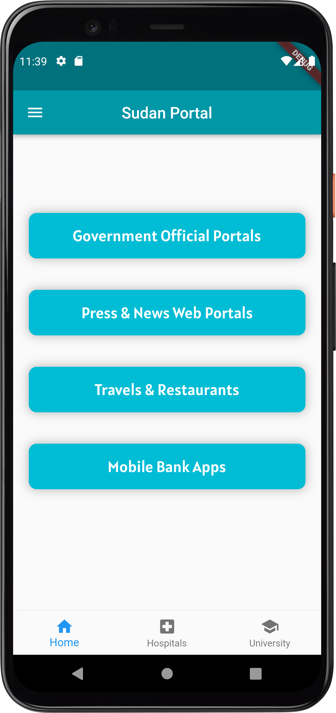
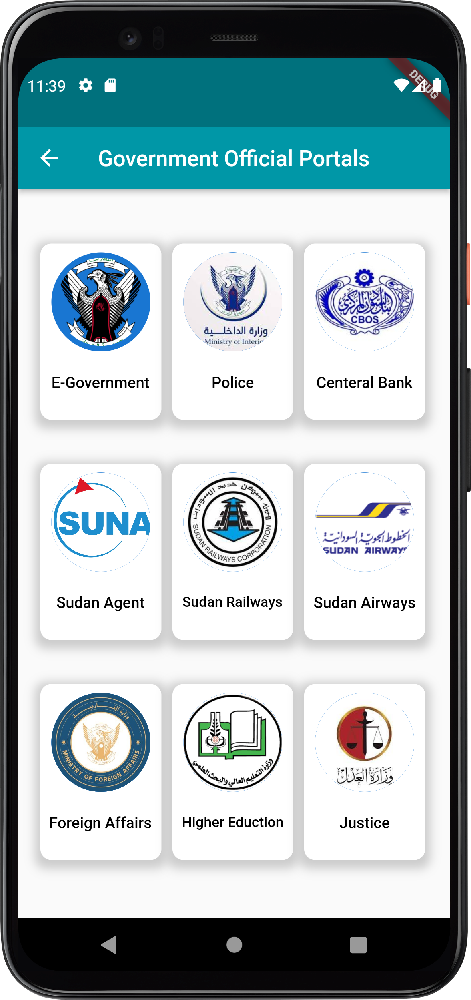
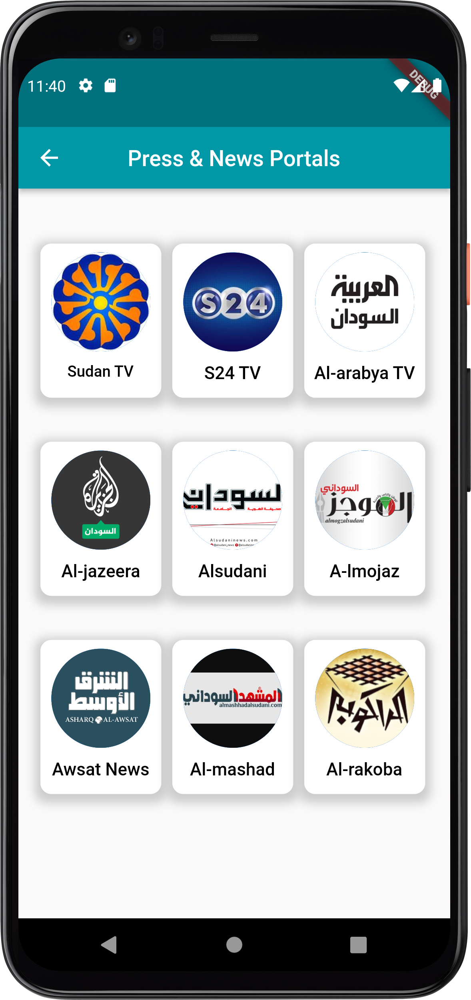
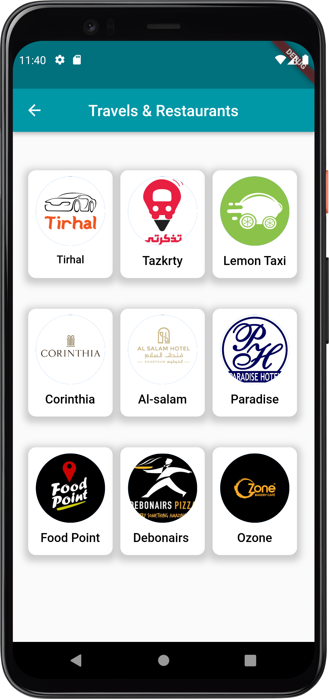
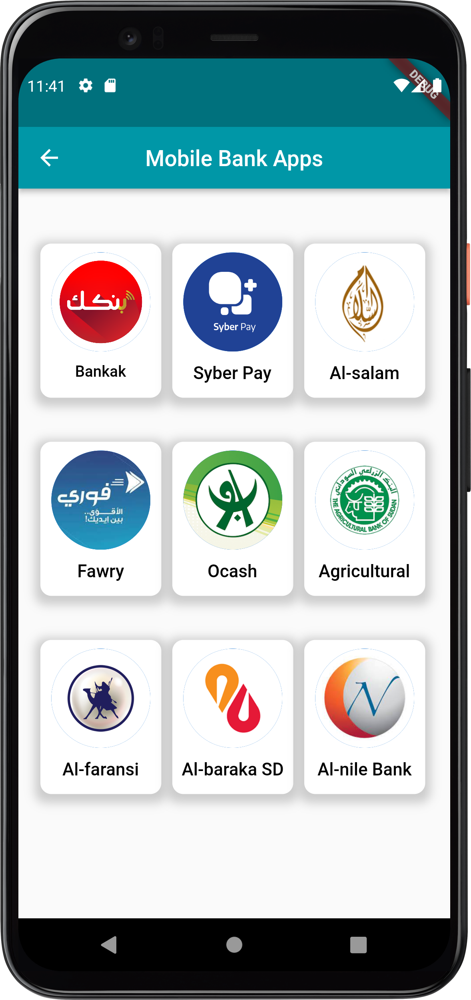
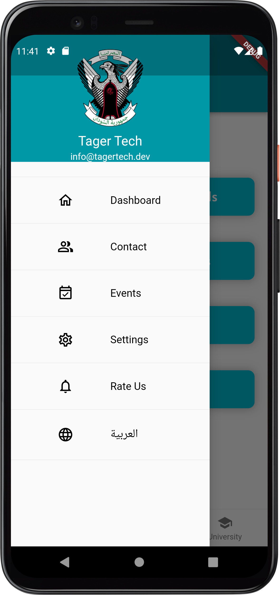
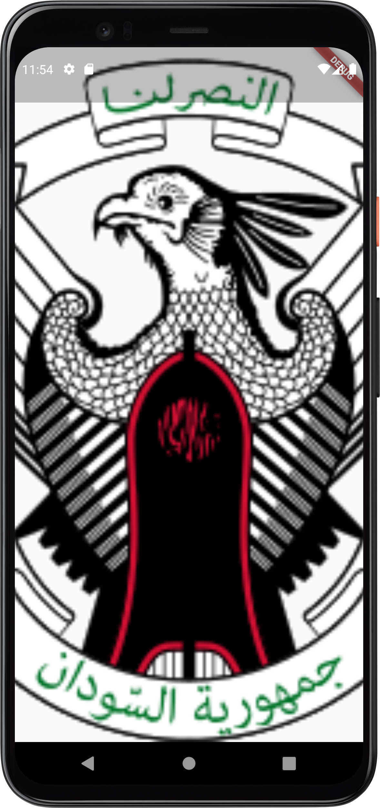

My Portfolio
School App
Sudan Portal App is the app that contains most of the important applications and websites. from this app you cab easily access the most websites and apps in sudan.

Home page

Goverment page

Press & news page

Home page

Travel page

Mobile bank page

Splash page